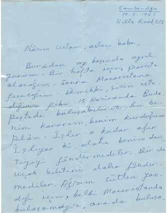
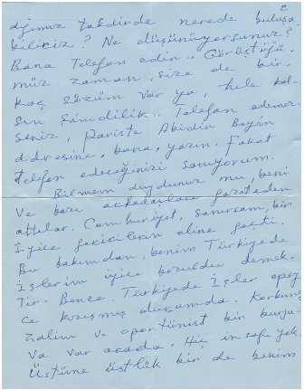
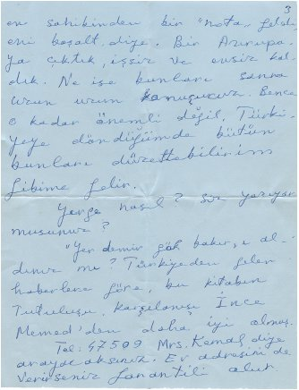
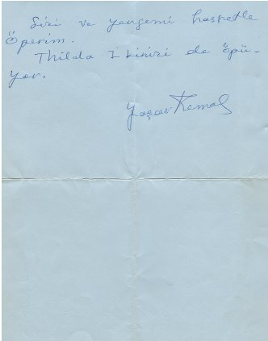
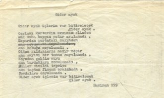
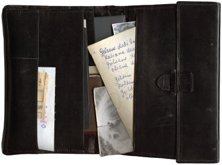
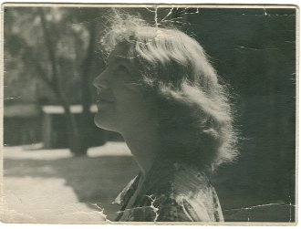
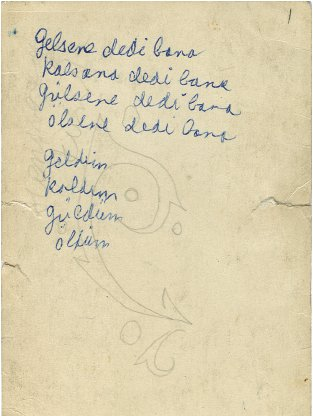

“Cambridge 19.5.1963
Hills Rodd, 238
Nâzım Ustam, aslan baba,
Buradan ay başında ayrılıyorum. Bir hafta için, Paris’te olacağım. Sonra Macaristana geçeceğim. Demek ki, sizin istediğiniz gibi 15 Haziranda Budapeştede buluşabiliriz. Bu benim kararım, benim kurduğum plân. İşler o kadar ağır işliyor ki daha benim davetiyeyi göndermediler. Bir de uçak biletini daha göndermediler. Ağzım sütten yandığı için, belki Macaristanda buluşamayız, orada buluşadığımız takdirde nerede buluşabiliriz? Ne düşünüyorsunuz? Bana telefon edin... Görüştüğümüz zaman, size de birkaç sözüm var ya, hele kalsın şimdilik... Telefon edemezseniz, Pariste Abidin Beyin adresine, bana, yazın. Fakat telefon edeceğinizi sanıyorum.

Bilmem duydunuz mu, beni ve bazı arkadaşları gazeteden attılar. Cumhuriyet, sanırsam, bir iyice gericilerin eline geçti. Bu bakımdan, benim Türkiyede işlerim iyice bozuldu demektir. Bence, Türkiyede işler epeyce kızışmış durumda. Korkunç zalim ve oportünist bir burjuva var orada. Hiç insafı yok. Üstüne üstlük bir de benim ev sahibinden bir “nota” geldi, evi boşalt diye. Bir Avrupa’ya çıktık, işsiz ve evsiz kaldık. Ne ise bunları sonra uzun uzun konuşuruz. Bence o kadar önemli değil. Türkiyeye döndüğümde bütün bunları düzeltebilirim gibime gelir.

Yenge nasıl? Siz yazıyor musunuz?
“Yer demir gök bakır”ı aldınız mı? Türkiyeden gelen haberlere göre, bu kitabın tutuluşu, karşılanışı İnce Memed’den daha iyi olmuş.

Tel: 47 509. Mrs. Kemal diye arayacaksınız. Ev adresini de verirseniz garantili olur.
Sizi ve yengemi hasretle öperim.
Thilda ikinizi de öpüyor.
Yaşar Kemal”
Mektubu okuduktan sonra hemen telefona sarıldın ve sabah saat 9’da görüşmek üzere santrale kayıt yaptırdın:
“47509 – Cambridge, Mister Kemal.
İşte burada, Yaşar’la gerçekleşemeyen konuşmanın makbuzu duruyor öylece.
Birden nasıl da canlanıverdin! Ertesi gün yapacağın işleri yeniden gözden geçirdin ve şöyle dedin:
“Doktorların canı cehenneme. Macaristan Büyükelçiliği’ne gitmeli. Yaşar’ın kâğıtlarını çabuklaştırmak gerek. Budapeşte’ ye gidişimizi de öne alalım ha, ne dersin? Bir hafta sonra mesela. Anyuta’yı okuldan alıp gidelim. Orada, yerinde her şeyi daha kolay yoluna koyarım onun için. Ah, zavallı oğlum benim. Onu yola getiriyorlar akılları sıra. Güçlü olduğunu, onlara göre fazlasıyla bağımsız davrandığını gördüler tabii. Olsun, hiç önemi yok bunların. Yaşar’ın her işi yolunda gidecek. Eminim buna. Şimdiden belli artık. Harikulade bir ağaç gibi gelişti yeteneği ve insanlar keyifle tadına bakıyorlar yemişlerinin... Çok memnunum çok. Ciddi bir kitap yeni yazdığı, onunla daha da yukarılara çıktı... Yarın onu da yayınevine götürmeli. Çevirisini hemen yapsınlar... Yoksa ona şimdi mi telefon edeyim, Vera? Yok, yok geç oldu artık. Bağlanıncaya kadar... sabah olur...”
Konuştun, konuştun, konuştun...
Başladın Yaşar’ın kitabını aramaya. Bir türlü bulamıyordun. Ben yatmaya gittim. Yatak odasına kadar eşlik ettin bana. Sonra Novıy Mir dergisinin son sayısını getirip kendin televizyonun başına geçtin. Son haberleri izlemek istiyordun. Yarım saat geçmemişti ki yanıma geldin ve beklenmedik bir öneride bulundun:
“Hadi parka gidelim, kestanelerin altında oturalım biraz. Hepsinin çiçekleri açmış. Evin içi boya kokuyor, çok havasız.”
Pencereden baktım, karşı evde tek bir lamba bile yanmıyordu. Omuzlarıma büyük bir şal aldım, çıplak ayaklarıma saboları geçirdim ve çıktık dışarı.
Ve orada, parkımızda, çiçeklenmiş kestane ağaçlarının altındaki bankta oturup son kez söyleştik seninle. Hüzünlü, ama hoş bir konuşmaydı... Ancak ölüm unutturabilir onu bana.
“İki yıl daha yaşayacağım,” dedin kararlı bir şekilde. “Mutlaka yaşayacağım. Sonra tutma beni. Kendimi elden ayaktan düşmüş, bir nimet gibi ölümü bekleyen yaşlı birisi olarak hayal edemiyorum. Ah, söyleme bana bir şey, bir tanem! Sözlerin sanki bitki şurubu gibi, yalan olduklarını biliyorsun, ama onlara inanmamazlık da edemiyorsun. Şu bizim yaşlı Lir’i sevmek mümkün mü? Ben daha da kötü olurum. Kör değilim ve bana sürekli olarak senin ışığın, sevgin gerekir. Hem de her gün biraz daha fazla. Şimdi de öyle ya. Her gün daha fazlası gerekiyor.”
Sustun. Herhalde tepki vermemi bekliyordun. Hiçbir şey söylemedim. Elini yüzüne götürdün ve bir tokat attın kendine.
“Aptalın tekiyim ben. Bu saçmalıklarla bıktırıyorum seni. Bir daha bunlardan konuşursam ne olayım, bahsetmeyeceğim hiç.”
Kısa bir süre susup sonra sordun:
“Söylesene Vera, nasıl ölmek isterdin?”
“Hiçbir şekilde.”
“Anlıyorum,” dedin gülerek. “Ama her şeye rağmen olacak bir gün, biliyorsun... Sen çabuk ölümü mü tercih edersin, yoksa...”
“Elbette, çabucak ölmeyi kim istemez ki...”
“Ben!..” derken çığlık attın neredeyse. “Ben!..”
“Nasıl?”
“Kanserden ölmeyi tercih ederim. Yavaş yavaş, her şeyi anlayarak, bir süreçte gelişsin. Kanserden ölmeyi, akciğerlerim çürüyerek mesela, ne olursa olsun, ama yavaş gelsin ölüm. Sana garip mi geldi bu?”
“Hem de çok.”
“Sanmıyorum, ama olur da kanser çıkarsa bende, bana söyleyeceğine söz verir misin, Verusya?”
Söz verirsem yapmak zorunda olacağımı biliyordum. Bu katılığı neyin adına göstermek zorunda olacağımı bilmek istedim.
“Biraz daha açıkla bana Nâzım.”
“Beklenmedik ölüm, kötü bir ihanet bence, sırtına saplanmış bir bıçak sanki. Anlıyor musun? Ben ölmek üzere olduğumu bilmek zorundayım. O zaman, tüm hayatım boyunca yapamadığım şeyleri yapabilirim. Bu çok önemli. Tüm durum değişir o zaman. Aynı adam, ama bir başkası sanki. Her şey daha farklı olur. Temposu, cesareti, dürüstlüğü, her şeyi yani. Dünyayı başka türlü görmeye başlar. İşte, ölümden önce bu süreci yaşamam gerek.”
Susmuştun bunları dedikten sonra. Uzun sürdü suskunluğun.
“Öldükten yarım saat sonra uyanmak isterdim. Uyanmak ve bana bu çileleri çektiren yüreğimi görmek, bir de senin ağladığını işitmek isterdim...”
Giderayak işlerim var bitirilecek,
giderayak.
Ceylanı kurtardım avcının elinden
ama daha baygın yatar ayılamadı.

Kopardım portakalı dalından
ama kabuğu soyulamadı.
Oldum yıldızlarla haşır neşir
ama sayısı bir tamam sayılamadı.
Kuyudan çektim suyu
ama bardakla konulamadı.
Güller dizildi tepsiye
ama taştan fincan oyulamadı.
Sevdalara doyulamadı.
Giderayak işlerim var bitirilecek,
giderayak.[139]
Tanrı aşkına, Nâzım, şimdi bile ne kadar çok konuşuyoruz ölümden. Seni böyle takip eden bir olgudan nereye kaçabilirdik ki? Oysa sen bir dilekte bulunmuştun ondan: “İki yıl daha yaşayacağım... Bana vakit gerek!..”
Ardından eve döndük. Dışarıda hava ağarmıştı artık. Yatağın yanına oturdun. Uyku evimizi terk etmişti. Başucumdaki kutudan “si-ba”nın uyku ilacından alıp verdin bana...
Her zaman uyandığımdan daha erken uyandım. Perdesiz pencereden doğruca gözüme gelen güneş uyandırmıştı beni. Ev sessizdi. Seni uyandırmak istemediğimden kalkmadım. On beş dakika kadar geçmişti herhalde ve sabah postasının kutumuza bırakıldığını işittim, demek ki saat 7:20’ydi. Posta kutusunun kapağını ses yapıp seni uyandırmasın diye özellikle değiştirmiştim; ama sen gene de her sabah postacının sesine uyanıyordun. Gene öyle oldu. Birkaç dakika sonra kalktın ve neredeyse koşar adım kapıya yöneldin. Önce sana sesleneyim diye düşündüysem de biraz daha şekerleme yapmaya karar verdim. Dönmedin. Bir dakika geçti, iki dakika... Sokak kapısını açtığını işitmiştim, ama nedense kuşku verici bir sessizliğe bürünmüştün ardından. Birazcık daha yattım. Ne var ki huzursuz olmuştum. Bir güç beni kalkmaya ve nerede saklandığını bulmaya zorluyordu. Bir şeyler yemek ya da sigara içmek istemiş olabileceğini düşündüm. Kalkıp mutfağa gittim. Orada değildin. Banyonun, sonra tuvaletin kapısını açıp baktım. Birden dehşete kapılmıştım. Öyle korkunç bir duyguydu ki sanki kaynar sular dökülüyordu başımdan aşağı...
Koridora yöneldim ve seni orada, askılığın yanında yerde gördüm. Sırtın kapıya yaslanmış, elin yere dayalı, bir ayağın Türk usulü bağdaş kurmuş gibi kıvrık, diğeri serbestçe ileri uzanmış oturuyordun. Beyaz yüzün ve alışılmışın dışında sakin ifadenden, o dakikada anladım ölmüş olduğunu.
Dünyam yıkıldı bir anda. Issız bir boşluktaydım sanki. Seninle konuşmayı denedim. Yanıt vermedim. Anladım, her şey bitmişti. Telefona sarılıp Tosya’yı aradım.
“Tosya, Nâzım öldü.”
“Olamaz,” diye çığlık attı.
“Bekleyin, hemen gidip bakayım,” dedim ve ahizeyi bırakıp tekrar senin yanına koştum. Bir kez daha anladım, ölümün gerçek olduğunu.
“Evet, Tosya öldü,” dedim.
Gene inanmadı ve ben bir daha koştum senin yanına. Değişen bir şey yoktu. Bu ne kadar devam etti bilmiyorum. Sonunda: “Şimdi doktor çağırıyorum,” diye haykırdı Tosya ve kapattı telefonu.
Ev, içinden yaşam dışarı pompalanmış gibi sessizleşti. Eşyalar ağırlıklarını yitirdiler. Ayaklarımın üstünde duramadığımı anımsıyorum. Ayaklarıma söz geçiremediğimden değildi bu. Sanki ayaklarım yoktu ve ben odalarda eşyalara, kapılara çarparak yüzüyordum sanki. Oturmak aklıma bile gelmiyordu. Kim ve nasıl anımsamıyorum, ama birileri bana doktorların yola çıktığını haber verene kadar oradan oraya dolaşıp durdum evin içinde. Botkinskaya hastanesinden kalp çalıştırma ekibi ile Kremlin hastanesinden ilkyardım ekibi yola çıkmıştı.
Avluya bakan balkon kapısı akşamdan açık kalmış olacak ki kolaylıkla çıktım balkona. Aydınlık bir sabahtı. Yaşamın durmamış olmasının beni nasıl şaşırttığını anımsıyorum. Avludaki tüm apartmanlardan insanlar telaşla çıkıyorlar, birkaç saniye içinde, balkondan gördüğüm arkın arkasından doğru gözden kayboluyorlardı. Çocuklar okula, büyükler işlerine acele ediyordu. “Hiçbir şeyden haberleri yok,” diye düşündüm. “Olanı biteni bilmiyorlar, bütün mesele bu...” Birkaç kez koridora döndüm. Eskisi gibi evimizin kapısını senin heykelin koruyordu, Nâzım. Ayaklarının menevişli hareler, kırmızı lekelerle kaplanmasına nasıl şaşırdığımı anımsıyorum. Bir de ne kadar güzel ve rahat oturduğunu düşündüğümü... Duruşuna ve hareketin, çizgilerin tamamlanmışlığına hayran olmuştum sanki. Bu delilikten başka bir şey değildi.
Çok geçmeden –kim bilir belki de uzun zaman sonra– avluya kocaman beyaz bir otobüsün girdiğini ve içinden beyaz gömlekli adamların indiğini gördüm. 12 numaralı daireyi soruyorlardı. Bunu işitince, bizim daireye, 112 numaraya gelmeleri için seslendim. “Biz 12 numaraya geldik, siz bekleyin, size de gelecekler,” dediler yanıt olarak.
Yanıldıklarını biliyordum. Ama bu sabah yaşadığım, telafisi asla mümkün olmayan yanlışlıktan sonra her şey tersyüz olabilirdi. Hiçbir şeyin anlamı yoktu artık. Elimden gelen tek şey beklemekti.
Sonra az önceki adamların girdikleri binadan dışarı fırladıklarını ve bizim girişe doğru koştuklarını gördüm. Ardından zil çaldı hemen. Yukarıya çıkışlarını senin yanında ayakta durup bekledim. “Kapı açık,” dedim onlara. Ama içeri girmeleri imkânsızdı. Durumu açıkladım. “Kenara çekin onu,” dediler. Yapamayacağımı söyledim. İçlerinden biri kapı aralığından geçmeyi başardı. Olacakları görmemek için içeri geçtim. Aralarında konuştuklarını işitebiliyordum. Birisi: “Hâlâ sıcak,” dedi. Yanıma gelip enfarktüs geçirip geçirmediğini sordular, yanıtladım. “O zaman hiçbir şeyi değiştirmeye olanak yok...” dedi birisi.
Ben de biliyordum öyle olduğunu, hiçbir şeyi değiştirmeye olanak olmadığını ve etkilemedi bile beni böyle söylemeleri. Her şey, ama her şey yitirmişti anlamını.
Neden sonra seni konuk odasında divanın üstünde gördüm.
Az sonra tedavi gördüğün Kremlin hastanesinin doktorları geldi. içlerinden bir kadının yanıma gelip: “Karısı nerede?” diye sorduğunu anımsıyorum. “Benim,” dedim. “Anlamadınız herhalde, ölen adamın karısını soruyorum,” diye yineledi sorusunu. “Benim,” dedim usulca. Kendi dediğimden kendim kuşkuya düşmüştüm, “Karısı benim.” Kadın kendisini anlamadığımda ısrar ediyordu. Odadan dışarı çıktım.
Kısa bir süre sonra aynı kadın tekrar geldi yanıma ve adının Rusça harflerle nasıl yazılacağını sordu bana. Söyledim. Tekrar tekrar soruyordu. Tahammül etmek mümkün değildi. Masada pazar gününden kalmış şiir kitabını aldım ve uzattım kadına.
Sonrasında, ayrı hastanelerden gelen iki kadının tanış çıktığını, birbirlerinin sözünü keserek, beraber oldukları bir konferansta başlarına gelen komik bir olayı hatırlayarak gülüştüklerini anımsıyorum. Onlar kıkırdaşırken sen öyle sessizce yanlarında yatıyordun, Nâzım.
Çıkarlarken biri: “Yalnız kalmaktan korkar mısınız? Yanınıza bir yakınınız gelene kadar bekleyebiliriz,” dedi. “Korkmam,” dedim. Kalıp kalmaması umurumda bile değildi. Hatta gitmesini istemiştim...
Sonra anımsamıyorum neler olduğunu... Hayır, anımsıyorum... Ekber’in yürek paralayan, gırtlağından kopup gelen çığlığını... O sabah ilk yarım saat ağlamadığımı biliyorum Nâzım.
Ama sen bu yüzden uyanmamazlık etmedin (Ama bu seni yarım saat sonra uyanmaktan alıkoymadı.) değil mi, Nâzım?
İşte her şeyi anlattım sana. Ha, atladığım bir şey var. Arkandan çıkmamam için kapattığın kapının önünde, oturduğun yerde, elinin altında posta kutusunun anahtarı duruyordu ve ışık yanıktı. En son yapabildiğin şey ışığı yakmak olmuştu...
Bizim avludan mı kalkacak cenazem?
Nasıl indireceksiniz beni üçüncü kattan?
Asansöre sığmaz tabut,
merdivenlerse daracık.
Belki avluda dizboyu güneş ve güvercinler olacak,
Belki kar yağacak çocuk çığlıklarıyla dolu,
belki ıslak asfaltıyla yağmur.
Ve avluda çöp bidonları duracak her zamanki gibi.
Kamyona, yerli gelenekle yüzüm açık yükleneceksem,
bir şey damlayabilir alnıma bir güvercinden : uğurdur.
Bando gelse de, gelmese de çocuklar gelecek yanıma,
meraklıdır ölülere çocuklar.
Bakacak arkamdan mutfak penceremiz.
Balkonumuz geçirecek beni çamaşırlarıyla.
Ben bu avluda bahtiyar yaşadım bilemediğimiz kadar.
Avludaşlarım, uzun ömürler dilerim hepinize...[140]
Sen, Pierre, Paris, Moskova ... 63 ilkbaharının bu son haftaları nasıl da karışmıştı birbirine. Birinizi “Pére Lachaise” mezarlığına, diğerinizi “Novodeviçiye”ye götürdüler... Çevrenizde yaşananlar ise aynı... Ama senin Bach’a hayran kalarak yazdığın tekrarlar mucizesi değil bu, bayağılıklar tekrarı... Acımasızca ve hınç dolu.
Cenaze için hazırlanmış hareketsiz yüzünü anımsıyorum. Ölüm bozamamıştı onu. Sonra bir gölge düştü üstüne ansızın ve homurdandı yüzün. Burnunun ucu kıvrıldı ve sen yaşadığın zamankinden daha çok benzedin Türk’e. Sana baktım ve rahatsız eden şeyi anladım. Sessizce yalvarıyordum etraftakilere “Bitirin artık ne olur, acele edin, görmüyor musun dayanamıyor,” diyordum, ama kimse işitmiyordu beni. Havyarlı küçük sandviçler ikram ediyorlardı... Hayır, Nâzım, anlatmayacağım, yokluğunun ilk seferinde, Edebiyatçılar Evi’nin salonunda yatarken seni rahatsız edenin ne olduğunu, söylemeyeceğim sana. Susacağım. Bırak onu da başka birisi anlatsın sonra.
Yarın sensizliğin ikinci yılı doluyor. Telefon etmeye, haber vermeye gerek duymadan gelecek dostlarımız evimize. Gelecekler, çünkü burada olmak istiyorlar. Ben bugün hazırlık yapacağım. Dostlarımıza ikram etmek için bir şey alacağım... Vaktim az Nâzım, kusura bakma çıkmam gerek.
Mezarlıkta yapılan tören konuşmalarını anımsamıyorum. Seninle eve dönebilmemiz için herkesin dağılmasını beklemiştim. Cenazenin başında yüzler, yüzler, yüzler... vardı. Binlerce hüzünlü, gözleri yaşlı yüz. Başının altına kırmızı bir yastık konulmuştu. Benim gibi nefes almadan yatıyordun. Etrafında olan biteni, kendini görmemek için kapamıştın gözlerini. Ses kesildi ve biz ikimiz telepatiyle konuşmaya başladık. Güneşten parçalar kopup altın ışıltılarıyla kapladı seni. Pembeleşti yüzün. Tıpkı heyecanlandığın zamanlardaki gibi. Yanına yaklaştım ve yanaklarını okşadım. Avuçlarımdan daha sıcaktılar. O anda Muza Pavlova’nın nereden geldiğini anlamadığım sert bakışları gelip buldu beni. Sertçe ellerimi çekmemi söyledi. Cenaze makyajının bozulmaması gerekiyordu. Kimsenin bizi anlamadığını düşündüm. Yaptıkları tek şey benim seni dinlememe, benden ne istediğini anlamama engel olmaktı. Arkamdan birisi çelik gibi sert elleriyle omuzlarıma yapıştı ve beni uzaklaştırdı senden. Arkaya geçtim. Senin kısık sesle söylediklerinin önemli kısımlarını işitemiyordum.
Birkaç kez kocasıyla bize gelen garip ressamı gördüm. Bize gelirken hep giydiği sarı elbiseyi giymişti gene. Adı Ella mıydı yoksa Elle mi, anımsamıyorum. Tabuta yaklaştı ve başladı bir şeyler aranmaya. Çiçeklerin içine bakıyordu, aradığı her neyse. Bir o taraftan, bir bu taraftan epeyce aradı... Kadını gözden kaybettiğimi düşündüğüm bir anda önümde beliriverdi. Siyah bir gül uzattı bana, uzundu sapı.
“Nâzım’ın tabutundan bu gül,” dedi. “Onu saklamalısın!” fısıltıyla konuşuyordu. “Nâzım gönderdi onu sana!”
Birisi omuzlarımı ve ellerimi sıkı sıkıya tutuyordu. Kukla gibiydim. Hüzün yüklü olayın parçalarını mekanik olarak yaşıyordum. Tabutun diğer tarafında Memed’le duran Münevver’i anımsıyorum. Simonov’un işaretiyle yanına gelişi, alışkanlıkla sabahleyin kırmızı karanfil iliştirdiğim ceket cebinden seni öpüşü, aklımda Nâzım. Bir de Galina’nın tabuta atlayışını anımsıyorum, ihtirasla dudaklarına yapışmasını ve orada bıraktığı yağlı kırmızı izi... Yüzünün o harikulade görüntüsü bozulmuştu. Her şeyin devinimsiz olduğunu, yüzlerdeki perişanlığı ve senin sessizce yüzünün silinmesini istediğini anımsıyorum. Kimse kımıldamamıştı yerinden ve benim yapmam gerekmişti. Seninle vedalaşmamıştık Nâzım, ama bizim için son diye bir şey olamayacağını biliyordum artık.
“Bu Nâzım’dan, Nâzım’dan. Sana son gülü gönderdi, o!” diye fısıldamaya devam ediyordu sarı elbiseli kadın. “Ağla, onun için ağla, ayrılık zamanı geldi çattı...”
Ve birden sert bir hareketle ceketimin yakasına yapıştı ve insanüstü bir güçle gülü sapıyla beraber içime soktu. Acıdan haykırdım yüksek sesle ve o dakikada tabutun kapağının usulca senin üstüne doğru indirildiğini gördüm. Küçücük bir aralık kalmıştı! Gözyaşlarımdan ıslanmış mendili bırakıverdim o aradan içeri. Hatırlıyor musun: “Al Verusya, sana gözyaşı mendilleri,” diyerek bir düzine hediye etmiştin bana, o mendillerden biriydi.

Benim çığlığımı duymak istemiştin değil mi Nâzım? Onun için gönderdin gülü, öyle değil mi? Sakladım onu.
Daha sonra olanlardan en net anımsadığım, güneşi kapatamamış küçücük bir buluttan iri tanelerle yağan ve tabutunun üzerine tıkırtılarla düşen kısa süreli yağmur. Yaşlı bir kadın: “Olağanüstü bir adamın ardından doğanın gözyaşları,” demişti bana.
Eve nasıl geldiğimin farkında değilim. İçimde, boğazımda, göğsümde, midemde büyüyen bir gülle gelmiştim ama. Bir süre daha onunla dolaştım ve çıkartıncaya kadar da acı duymadım. İçimden çıkardığımda her yanı kan içindeydi gülün. Benimse boğazımdan aşağı kara bir yara izi uzanıyordu.
Dün senin yeşil taşının yanına bir dolu insan geldi Nâzım. Bir kısmını tanımıyorum. Bir dolu da çiçek vardı. Onlar da insanlar gibi sıkışık duruyordu. Bazıları suskundu. Kimileri sigara içiyor, kimileri de alçak sesle konuşuyordu. Uzun süre gitmediler. Kadınlar sürekli çiçekleri düzeltti durdu. Daha güzel olmalarını istiyorlardı, sanki senin boynundaki kravatı düzeltir gibi bir halleri vardı. Güneşli, ılık bir gündü. Mezarlığın uzağından bir yerlerden yük trenlerinin sireni duyuluyor, yakındaki stadyumda elinde megafonla spor yaptıran kadının talepkâr sesi işitiliyordu: “Nefes al, nefes ver – nefes al, nefes ver...” Şükürler olsun ki dün cenaze töreni yoktu mezarlıkta.
Bildiğin gibi, yazları bir aylığına sıcak sular kesiliyor. Sonya ve Vitya Komissarjevski evlerinde yıkanmaya çağırdılar beni. Sonya’nın özenle köpürttüğü küvete attım kendimi. Mutfaktan dostlarımın yaptığı hazırlıkların sesi geliyor, fincanlar şakırdıyordu. O atmosfer iyi geldi bana. Sonya’nın pişirdiği kurabiyelerin lezzetli kokusu dolmuştu eve. Çocukluğumdaki gibi sevinç kaplamıştı içimi ve yıkanmaya üşeniyordum. Öylece yattım suda. Sonya kapıdan masanın hazır olduğunu ve acele etmemi söyledi. Mümkün değil, hareket edemiyordum. Sonunda Sonya’nın sabrı tükendi ve banyoya daldığı gibi eline geçirdiği lifle sırtımı sabunlamaya başladı. Sonra beni kendisine döndürdü ve acı bir çığlık attı. Tüm bedenim boyunca devam eden taze yara izini görmüştü. Korku içinde Vitya’yı çağırdı. O da: “Kötülüğün görkemli izi!” diyerek uzaklaştı yanımızdan. Sonya bağırmaya başlamıştı:
“Sen delirdin mi? Hale bak, ne yapmışsın kendine? Bir daha hiç deneme. Nâzım’ın kemikleri sızlar! Seni asla affetmez, bunu aklından çıkarma. İntihar edenleri hiç hoş görmedi. Ne Mayakovski’yi, ne Fadeyev’i, hiçbirini! Onu aldat daha iyi. Kimle olursa! Hayatta kalmanın yolu neyse onu yap. İnsan yaşamı her şeyden değerlidir. Valeri öldüğünde, bir tanecik oğlum, 20 yıl baktım ona... Kendimi camdan aşağı bırakmak istedim. İpler buldum. Uyku ilaçları içmeyi düşündüm! Sonra beni Allah’ın unuttuğu bir yere turneye gönderdiler, konser vermeye. Üstüne üstlük bir de öyle bir yönetici verdiler ki, nasıl bir pislikti anlatamam. İki hafta yaşadım öyle, anlıyor musun?”
“Sonya! Neler anlatıyorsun, öyle,” diye içeriden seslendi Viktor. “Dinleme sen onu Vera. Tatsız şeylerden konuşuyor, dinleme.”
Ben kurulanırken Sonya dingin sesiyle anlatıyordu:
“Biliyor musun Vera, o sabah evde o öyle yatarken, çarşafı kaldırıp baktım. Büyüleyici bir güzelliği vardı... elleri, ayakları. O kadar bütünsel bir güzellikti ki ölü olması korkutmuyordu insanı. Verusya, Nâzım’dan sonra bir başkasıyla beraber olabilmen çok zor olacak...”

Ardından hep birlikte çay içip nefis çöreklerden yedik. Masa başında tek konumuz sendin Nâzım. Sadece senden konuştuk.
Şimdi, tüm bu yaşadıklarımızdan sonra; yalnız kaldığım bu dönemde yaşam, ilişkimizin dayanıklılığını sınarken, sana söylemek istediğim bir şey var. “Nasyonal” kafede anlaştığımız gibi, on gün sonra seninle kaçmak için yola çıktığıma, o soğuk ocak akşamında elimde valiz kaldırımının kenarında seni beklediğime hiç pişman olmadım.
Verdiğin düğün hediyesine, on üç tane kuyrukları havada tahtadan yapılmış kediye bakmak istedim yeniden. Yaşamımdaki tüm kötülükleri onların toplayacağını söylemiştin bana. Yatak odasına gittim. Kaç yıldır orada bir kutuda duruyorlardı! Kutunun kapağını kaldırdım ve... Kutunun kırmızı ipek kumaşla kaplı yüzeyine saçılmış kara kuyruklar, pençeler, kafalar çıktı karşıma. Sanki birisi –ama kim?– demir ökçeli ayakkabısıyla ezmişti kedileri. Tahta cesetleri avucuma boşalttığımda kutunun köşesine saklanmış birinin yara almadan durduğunu gördüm. Dikkatle kuyruğundan tutup kaldırdım kediciği, gülümsüyordu.

Sana bir sorum var Nâzım... Yanıtlamayacağını biliyorum, ama gene de soracağım.
O sabah, kimliğini istediler benden. Henüz seni götürmemişlerdi. Hayatımda ilk defa ceketinin cebine elimi soktum. Cüzdanından kimliğini çıkarttım. Bir de fotoğrafım çıktı cüzdanından. 1957 yılında birbirimize resimlerimizi vermiştik anımsıyor musun? Sen kendininkinin arkasına kurnazca “Vera kızıma,” diye yazmış ve ok saplanmış yaralı bir kalp resmi çizmiştin. Ben sana bir şey yazmadan vermiştim fotoğrafımı. O sabah, öylesine çevirdiğimde arkasına yazılmış dizeleri gördüm. Senin küçücük harflerinle yazılmıştı. İşte şimdi bunu öğrenmek istiyorum Nâzım, bu şiiri ne zaman yazdığını...
Gelsene dedi bana
Kalsana dedi bana
Gülsene dedi bana
Ölsene dedi bana
Geldim
Kaldım
Güldüm
Öldüm[141]